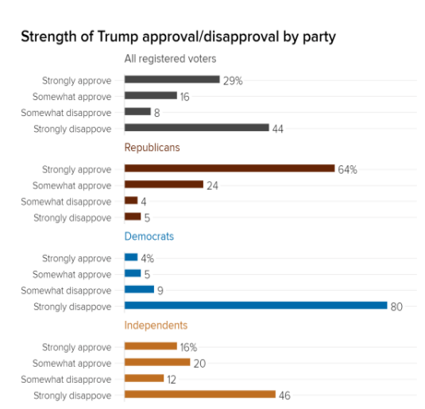
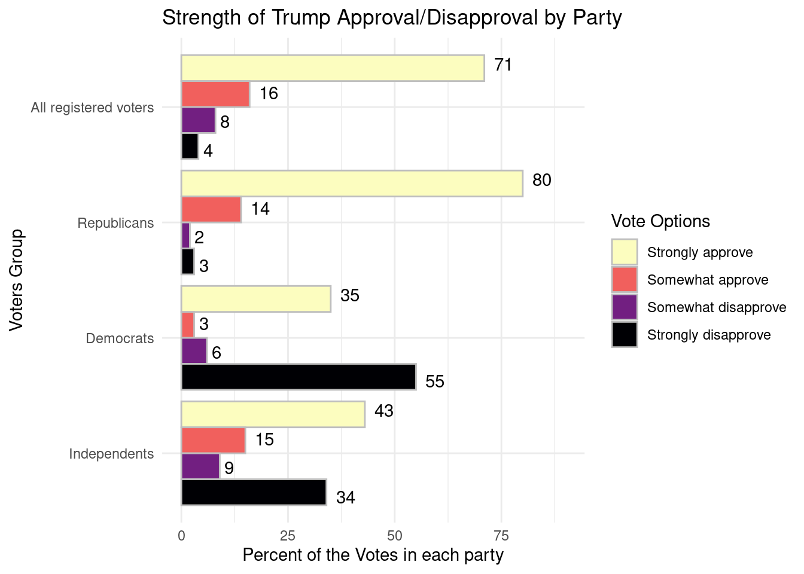
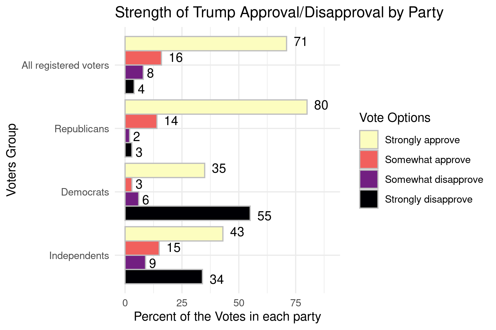

knitr::opts_chunk$set(echo = TRUE)
library("tidyr")
library("dplyr")
library("ggplot2")Rapairing a bad plot
Aim
My aim is to repair this plot:

Code
At first I load the csv file that I created myself. I assumed that the sum of numbers (not the percentage value) in each group of voters equals the (100% - percentage_value). Then I used proportion to count a number of votes in each category. Afterwards I created a data frame out of the csv data.
Table_votes_wide<-readr::read_csv("votes")
Table_votes_wide[1,2] <- round((Table_votes_wide[2,3]+Table_votes_wide[2,4]+Table_votes_wide[2,5])/0.71)
Table_votes_wide[1,3] <-round((Table_votes_wide[2,3]+Table_votes_wide[2,4]+Table_votes_wide[2,5])/0.36)
Table_votes_wide[1,4] <- round((Table_votes_wide[2,3]+Table_votes_wide[2,4]+Table_votes_wide[2,5])/0.96)
Table_votes_wide[1,5] <- round((Table_votes_wide[2,3]+Table_votes_wide[2,4]+Table_votes_wide[2,5])/0.84)
Table_votes_wide <- data.frame(Table_votes_wide)
Table_votes_wide VoteCategory Allregisteredvoters Republicans Democrats Independents
1 Strongly approve 69 136 51 58
2 Somewhat approve 16 24 5 20
3 Somewhat disapprove 8 4 9 12
4 Strongly disapprove 4 5 80 46Then I wanted to create a v of a longer format so I used the pivot_longer(data=Table_votes_wide).Next step was to make a column out of the headings of rows. Their values are now in a column ‘number’ and their names are in a column ‘Voters_Group’ and this column is redundant (which is a normal thing for a longer data format).
Table_votes_long<-pivot_longer(data=Table_votes_wide,
cols=colnames(Table_votes_wide)[-1],
values_to = "number",
names_to = "Voters_Group")
Table_votes_long# A tibble: 16 × 3
VoteCategory Voters_Group number
<chr> <chr> <dbl>
1 Strongly approve Allregisteredvoters 69
2 Strongly approve Republicans 136
3 Strongly approve Democrats 51
4 Strongly approve Independents 58
5 Somewhat approve Allregisteredvoters 16
6 Somewhat approve Republicans 24
7 Somewhat approve Democrats 5
8 Somewhat approve Independents 20
9 Somewhat disapprove Allregisteredvoters 8
10 Somewhat disapprove Republicans 4
11 Somewhat disapprove Democrats 9
12 Somewhat disapprove Independents 12
13 Strongly disapprove Allregisteredvoters 4
14 Strongly disapprove Republicans 5
15 Strongly disapprove Democrats 80
16 Strongly disapprove Independents 46Subsequently I counted the percentages and put them into a new column. I also wanted to change the name of one of the Voters_Group categories. I needed it to be have spaces for the plotting to look good for the reader.
Table_votes_long <- Table_votes_long %>%
group_by(Voters_Group) %>%
mutate(sumnum = sum(number)) %>%
mutate(percentage = round(number/sumnum,2)*100)
Table_votes_long <- Table_votes_long %>%
mutate(Voters_Group = ifelse(Voters_Group == 'Allregisteredvoters', 'All registered voters', Voters_Group))
Table_votes_long# A tibble: 16 × 5
# Groups: Voters_Group [4]
VoteCategory Voters_Group number sumnum percentage
<chr> <chr> <dbl> <dbl> <dbl>
1 Strongly approve All registered voters 69 97 71
2 Strongly approve Republicans 136 169 80
3 Strongly approve Democrats 51 145 35
4 Strongly approve Independents 58 136 43
5 Somewhat approve All registered voters 16 97 16
6 Somewhat approve Republicans 24 169 14
7 Somewhat approve Democrats 5 145 3
8 Somewhat approve Independents 20 136 15
9 Somewhat disapprove All registered voters 8 97 8
10 Somewhat disapprove Republicans 4 169 2
11 Somewhat disapprove Democrats 9 145 6
12 Somewhat disapprove Independents 12 136 9
13 Strongly disapprove All registered voters 4 97 4
14 Strongly disapprove Republicans 5 169 3
15 Strongly disapprove Democrats 80 145 55
16 Strongly disapprove Independents 46 136 34And finally I create a plot.
It has Voters_Group on the x axis and percentages of the votes on the y axis. I fill them by the voters choice.
It is a bar plot which doesn’t show counts of the data in column percentage. It shows simply the percentages thanks to
stat = "identity".I added labels for each bar to have an exact value written. I used the
geom_text(aes(label = percentage). And I chose labels position by trying out different values ofwidth,hjustandvjustand this code is my consensus.I added the title and other needed labels, e.g. names of axes.
I also chose a color palette which was magma for discrete values.
I chose the minimal theme.
Then I flipped the whole plot because I wanted it to resemble the plot I want to repair. And I had to choose the order of the labels in the legend and the bars on x axis.
This led to a problem that the legend was going the other way round than the bars displayed so I also had to reverse the order of list in the legend. And I had to choose the order of the bars on x axis.
Finally I needed to lengthen the y axis to let all the values be visible.
my_repaired_plot <-ggplot(data = Table_votes_long, aes(x = factor(Voters_Group, levels = c("Independents", "Democrats", "Republicans", "All registered voters")), y = percentage, fill = factor(VoteCategory, ,levels = c("Strongly disapprove", "Somewhat disapprove", "Somewhat approve", "Strongly approve")))) +
geom_bar(stat = "identity", position = "dodge", color = 'grey') +
geom_text(aes(label = percentage), position = position_dodge(width = 1), hjust = -0.5) +
labs(title = "Strength of Trump Approval/Disapproval by Party",
x = "Voters Group",
y = "Percent of the Votes in each party",
fill = "Vote Options") +
theme_minimal() +
coord_flip() +
guides(fill = guide_legend(reverse = FALSE))+
scale_fill_viridis_d(option = "magma", breaks = c("Strongly approve", "Somewhat approve", "Somewhat disapprove", "Strongly disapprove")) +
ylim(0, 90)
my_repaired_plot
Here I am saving my plot to an image.
ggsave("images/my_repaired_plot.png", my_repaired_plot, width = 6, height = 4, scale = 1, bg = 'white')Outcome
This is the plot I created: 